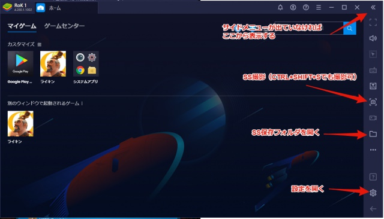
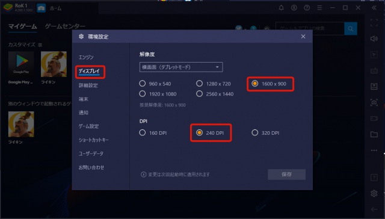
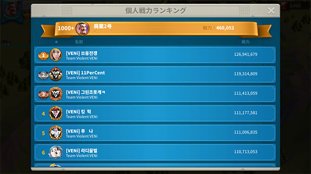
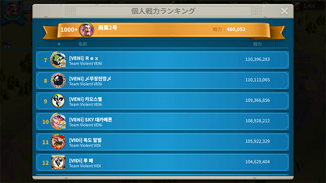

最大100ファイルまでOCR用スクリーンショットの撮影方法
 BlueStacksのディスプレイ設定で解像度を「1600x900」、DPIを「240」にする。
  計算したい順位までスクリーンショットを撮影する。 ※OSのスクリーンショット撮影機能ではなくBlueStacksの機能で撮影する（ショートカットキー：CTRL+SHIFT+S） ※300位までに必要なスクリーンショットは50枚。